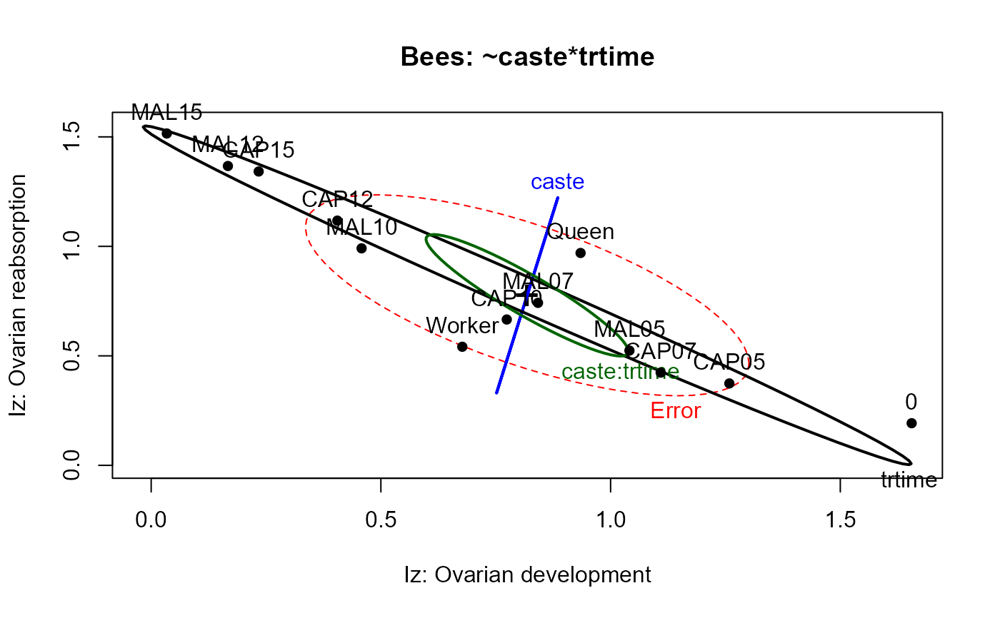

Pabalan, Davey and Packe (2000) studied the effects of captivity and maltreatment on reproductive capabilities of queen and worker bees in a complex factorial design.
Format
A data frame with 246 observations on the following 6 variables.
castea factor with levels
QueenWorkertreata factor with levels
""CAPMALtimean ordered factor: time of treatment
Izan index of ovarian development
Iyan index of ovarian reabsorption
trtimea factor with levels
0CAP05CAP07CAP10CAP12CAP15MAL05MAL07MAL10MAL12MAL15
Source
Pabalan, N., Davey, K. G. & Packe, L. (2000). Escalation of Aggressive Interactions During Staged Encounters in Halictus ligatus Say (Hymenoptera: Halictidae), with a Comparison of Circle Tube Behaviors with Other Halictine Species Journal of Insect Behavior, 13, 627-650.
Details
Bees were placed in a small tube and either held captive (CAP) or shaken
periodically (MAL) for one of 5, 7.5, 10, 12.5 or 15 minutes, after which
they were sacrificed and two measures: ovarian development (Iz) and
ovarian reabsorption (Iy), were taken. A single control group was
measured with no such treatment, i.e., at time 0; there are n=10 per group.
The design is thus nearly a three-way factorial, with factors caste
(Queen, Worker), treat (CAP, MAL) and time, except that there
are only 11 combinations of Treatment and Time; we call these trtime
below.
Models for the three-way factorial design, using the formula
cbind(Iz,Iy) ~ caste*treat*time ignore the control condition at
time==0, where treat==NA.
To handle the additional control group at time==0, while separating
the effects of Treatment and Time, 10 contrasts can be defined for the
trtime factor in the model cbind(Iz,Iy) ~ caste*trtime See
demo(bees.contrasts) for details.
In the heplot examples below, the default size="evidence"
displays are too crowded to interpret, because some effects are so highly
significant. The alternative effect-size scaling, size="effect",
makes the relations clearer.
References
Friendly, M. (2006). Data Ellipses, HE Plots and Reduced-Rank Displays for Multivariate Linear Models: SAS Software and Examples Journal of Statistical Software, 17, 1-42.
Examples
data(Bees)
require(car)
# 3-way factorial, ignoring 0 group
bees.mod <- lm(cbind(Iz,Iy) ~ caste*treat*time, data=Bees)
car::Anova(bees.mod)
#>
#> Type II MANOVA Tests: Pillai test statistic
#> Df test stat approx F num Df den Df Pr(>F)
#> caste 1 0.72792 240.787 2 180 < 2.2e-16 ***
#> treat 1 0.19313 21.542 2 180 4.098e-09 ***
#> time 4 0.75684 27.548 8 362 < 2.2e-16 ***
#> caste:treat 1 0.02506 2.313 2 180 0.1019
#> caste:time 4 0.28670 7.572 8 362 2.288e-09 ***
#> treat:time 4 0.01941 0.443 8 362 0.8945
#> caste:treat:time 4 0.06796 1.592 8 362 0.1257
#> ---
#> Signif. codes: 0 '***' 0.001 '**' 0.01 '*' 0.05 '.' 0.1 ' ' 1
op<-palette(c(palette()[1:4],"brown","magenta", "olivedrab","darkgray"))
heplot(bees.mod,
xlab="Iz: Ovarian development",
ylab="Iz: Ovarian reabsorption",
main="Bees: ~caste*treat*time")
heplot(bees.mod, size="effect",
xlab="Iz: Ovarian development",
ylab="Iz: Ovarian reabsorption",
main="Bees: ~caste*treat*time",
)
# two-way design, using trtime
bees.mod1 <- lm(cbind(Iz,Iy) ~ caste*trtime, data=Bees)
Anova(bees.mod1)
#>
#> Type II MANOVA Tests: Pillai test statistic
#> Df test stat approx F num Df den Df Pr(>F)
#> caste 1 0.67976 236.673 2 223 < 2.2e-16 ***
#> trtime 10 0.82851 15.842 20 448 < 2.2e-16 ***
#> caste:trtime 10 0.32173 4.294 20 448 3.746e-09 ***
#> ---
#> Signif. codes: 0 '***' 0.001 '**' 0.01 '*' 0.05 '.' 0.1 ' ' 1
# HE plots for this model, with both significance and effect size scaling
heplot(bees.mod1,
xlab="Iz: Ovarian development",
ylab="Iz: Ovarian reabsorption",
main="Bees: ~caste*trtime")
heplot(bees.mod1,
xlab="Iz: Ovarian development",
ylab="Iz: Ovarian reabsorption",
main="Bees: ~caste*trtime",
size="effect")

palette(op)
# effect plots for separate responses
if(require(effects)) {
bees.lm1 <-lm(Iy ~ treat*caste*time, data=Bees)
bees.lm2 <-lm(Iz ~ treat*caste*time, data=Bees)
bees.eff1 <- allEffects(bees.lm1)
plot(bees.eff1,multiline=TRUE,ask=FALSE)
bees.eff2 <- allEffects(bees.lm2)
plot(bees.eff2,multiline=TRUE,ask=FALSE)
}
#> Loading required package: effects
#> lattice theme set by effectsTheme()
#> See ?effectsTheme for details.